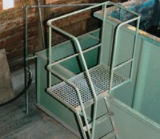

Schutzmaßnahmen
Vorbeugender Holzschutz
Ansetzen der Imprägnierlösung
Die wässrigen Holzschutzmittel (Holzschutzmittelsalze und wasserverdünnbare Holzschutzmittel mit organischen Wirkstoffen) werden häufig als Konzentrat geliefert und vor Ort durch Zugabe von Wasser die erforderliche Anwendungskonzentration eingestellt.
Aufgrund der höheren Konzentration der Inhaltsstoffe in den Konzentraten im Vergleich zu den fertigen Imprägnierlösungen sind die Gefahren beim Umgang mit den Konzentraten höher als beim Umgang mit den verdünnten Imprägnierlösungen.
Technische Schutzmaßnahmen
Für das sichere Ansetzen der Imprägnierlösung können an Trogtränkanlagen folgende Maßnahmen getroffen werden:
- Benutzen einer Pumpe zum Einbringen des Holzschutzmittelkonzentrates in den Trog
- Installation eines begehbaren Podestes mit Absturzsicherung von dem aus das Ablaufventil des Konzentratbehälters betätigt werden kann
- Feste oder bewegliche Wasserleitungen zum Befüllen verwenden, die nicht in die Imprägnierflüssigkeit hineinreichen
- Die Durchmischung sollte durch Auf- und Abbewegen von Holzpaketen erfolgen
- Zum Durchmischen der Imprägnierlösung darf – unabhängig von der Art der Tränkanlage – Druckluft nicht verwendet werden
Organisatorische Maßnahmen
Das Befüllen des Tränk- oder Mischbehälters mit Holzschutzmitteln ist ständig zu überwachen.
Lösemittelhaltige Produkte werden im Allgemeinen als gebrauchsfertiges Produkt geliefert, die erforderlichen Schutzmaßnahmen bei der Verarbeitung sind bei den einzelnen Einbringverfahren beschrieben.

Persönliche Schutzausrüstungen
| |
 |
 |
 |
 |
| Holzschutzmittel |
Schutzhandschuhe |
Augenschutz |
Atemschutz |
Schutzkleidung |
| Chromathaltige Holzschutzmittel-konzentrate |
- Fluorkautschuk/Viton
- auch geeignet
(bis 2 Stunden)- Polychloropren
- Butylkautschuk
- PVC
- Ungeeignet:
Latex, Nitril
|
Dichtschließende Schutzbrille
Korbbrille |
Bei Auftreten von Stäuben und Aerosolen:
Partikelfilter P2 |
Säurebeständige Schutzkleidung
Chemikalienschutzanzug,
zumindest großflächige Gummischürze |
| Wässrige Holzschutz-mittelkonzentrate mit Bor- oder Kupfersalzen, Quats oder Cu-HDO |
|
Dichtschließende Schutzbrille
Korbbrille |
Im Allgemeinen nicht erforderlich; bei Auftre-
ten von Stäuben und Aerosolen:
Partikelfilter P2 |
laugenbeständige Schutzkleidung, Chemikalienschutzanzug, zumindest großflächige Gummischürze |
| Wässrige Holzschutz-mittelkonzentrate mit organischen Wirkstoffen |
|
Gestellbrille |
Im Allgemeinen nicht erforderlich |
Chemikalienschutzanzug, zumindest großflächige Gummischürze |
Die Handschuh-Datenbank von GISBAU (www.gisbau.de) enthält Schutzhandschuh-Empfehlungen von verschiedenen Handschuh-Herstellern für die Holzschutzmittel-Produktgruppen.
Es werden Handschuhfabrikate mit Tragedauern für den Spritzkontakt (z.B. Streichen) und den Dauerkontakt (z.B. Spritzen) angegeben.
Auf unbedeckte Körperteile sollten Hautschutzmittel aufgetragen werden.
Nach der Arbeit und vor längeren Arbeitspausen sollten die Hände gereinigt und Hautpflegemittel aufgetragen werden.